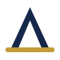

ADV STATION
Cada caso tem
seu
caminho
Gestão para a advocacia
previdenciária
Organização
Acompanhamento
Clareza
Maternidade
Legal
Gestão de casos de salário-maternidade
Previdenciário
Geral
Gestão para diferentes benefícios previdenciários
Aposentadorias
Benefícios por incapacidade
Pensão por morte
Auxílio-acidente
Uma mesma visão
de
gestão
ADV STATION
Conheça nossas soluções